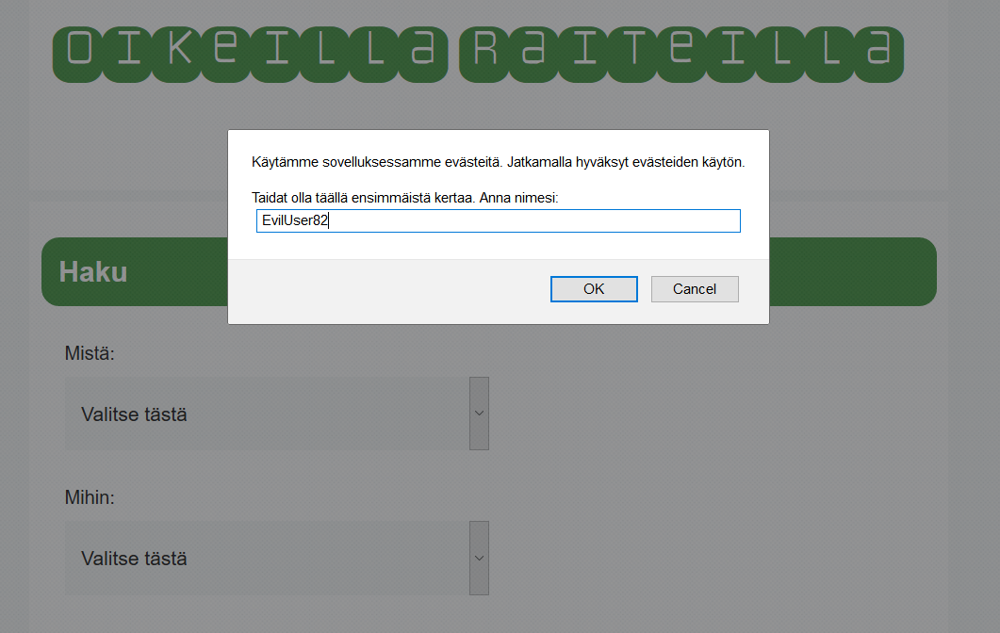
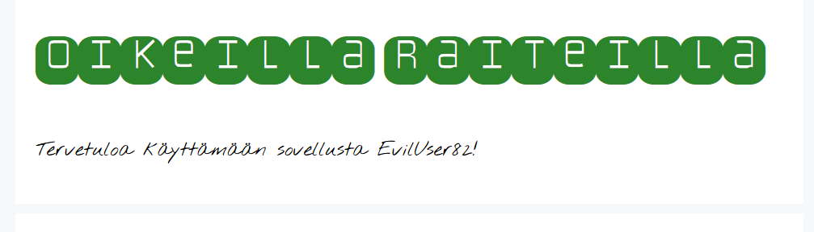
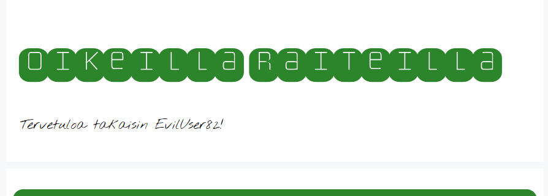
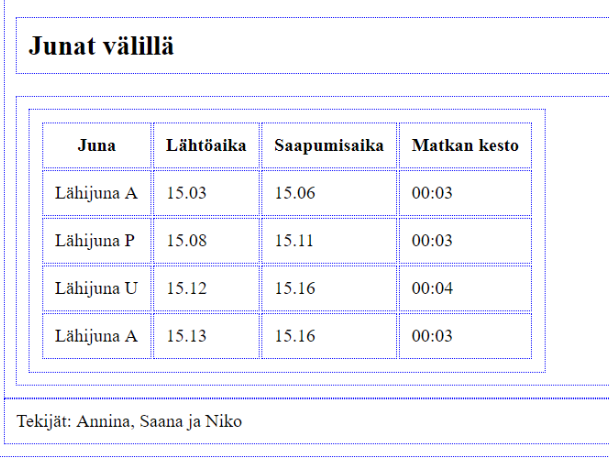
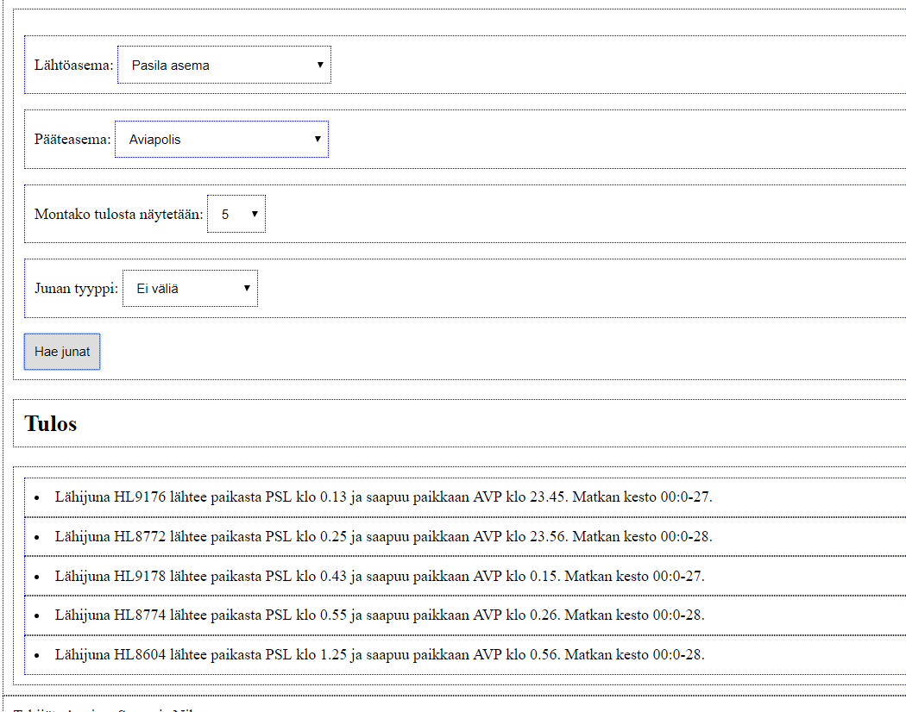
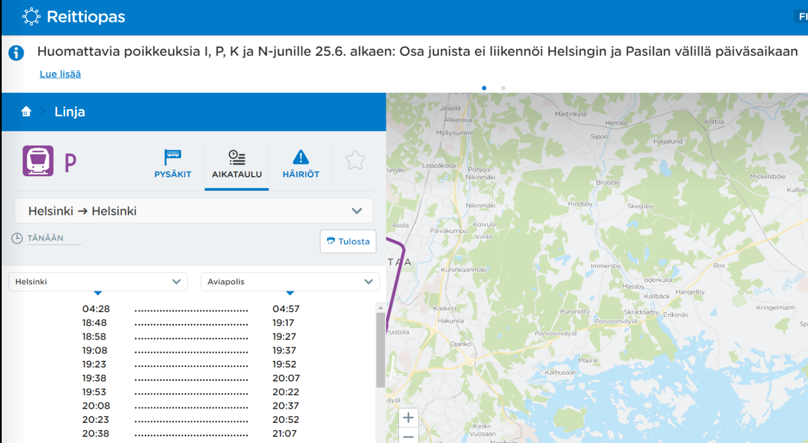

Junaprojekti-esitys ryhmä 1
Junat sivulla -tehtävänanto
- Tavoitteena oli käyttää Liikenneviraston avointa junadataa
- Lisäksi tuli mahdollistaa omien asetusten tallettaminen sivulla
Demo
Rakenteen yleiskuva
- Ulkoasu: HTML ja CSS
-
Toiminnallisuus: kolme JavaScript-tiedostoa
- Keksit
- Juna-asemien haku valikkoon
- Junadatan haku ja käsittely
Keksit



Junadatan käsittely



Lopuksi
KYSYMYKSIÄ?